bosque_00 · claro_01 · fog: ON
Los árboles son idénticos hacia todos lados. Algo pequeño brilla entre las ramas.
La niebla es demasiado espesa. (Este bosque necesita JavaScript.)

↩ volver a test_room_00